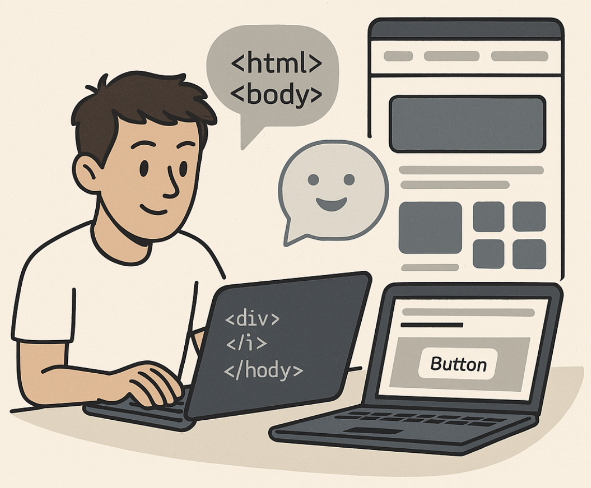

Project
AI Assisted Web Development
Full-stack portfolio site designed, built, and iterated using AI as a development partner — from architecture decisions to deployment.
Project
Full-stack portfolio site designed, built, and iterated using AI as a development partner — from architecture decisions to deployment.
This project is the portfolio site you're reading right now. It was designed and built using AI as an active development partner — not just for boilerplate, but for architectural decisions, layout iteration, component design, and copy review. The goal was to ship a polished, production-quality site rapidly while genuinely learning the web stack in the process.
Rather than using a site builder or template, every line of HTML, CSS, and JavaScript was written from scratch via a conversational prompting workflow with Claude Code. This forced a deep engagement with semantic structure, responsive design, and browser behaviour that a template would have hidden.

The outcome demonstrates that AI-assisted development is not about writing less code — it is about spending more time on decisions and less time on syntax lookups. Every snippet was reviewed, understood, and adjusted before committing.